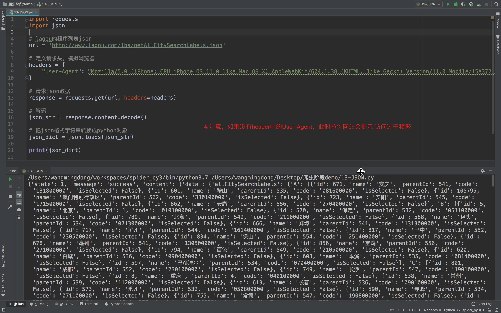
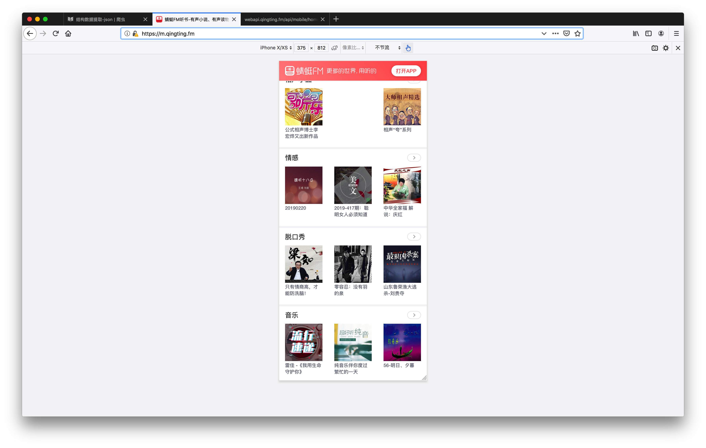

结构数据提取-JSON
学习目标
- 掌握 JSON相关的方法(loads 、 dumps)
1. 复习什么是JSON
JSON(JavaScript Object Notation) 是一种轻量级的数据交换格式，它使得人们很容易的进行阅读和编写。
同时也方便了机器进行解析和生成。
适用于进行数据交互的场景，比如网站前端与后端之间的数据交互。
2. json模块中方法的学习

具体使用方法：
# json.dumps 实现python类型转化为json字符串
# indent实现换行和空格
# ensure_ascii=False实现让中文写入的时候保持为中文
json_str = json.dumps(mydict,indent=2,ensure_ascii=False)
# json.loads 实现json字符串转化为python的数据类型
my_dict = json.loads(json_str)
3 代码示例
我们以拉勾网城市JSON文件 http://www.lagou.com/lbs/getAllCitySearchLabels.json 为例，获取所有城市。
import requests
import json
# lagou的程序列表json
url = 'http://www.lagou.com/lbs/getAllCitySearchLabels.json'
# 定义请求头，模拟浏览器
headers = {
"User-Agent": "Mozilla/5.0 (iPhone; CPU iPhone OS 11_0 like Mac OS X) AppleWebKit/604.1.38 (KHTML, like Gecko) Version/11.0 Mobile/15A372 Safari/604.1",
}
# 请求json数据
response = requests.get(url, headers=headers)
# 解码
json_str = response.content.decode()
# 把json格式字符串转换成python对象
json_dict = json.loads(json_str)
print(json_dict)
运行效果：

4 作业
爬取蜻蜓FM上的信息 参考url：https://m.qingting.fm/

总结
- json的概念(JavaScript Object Notation)和json的作用数据交互时的一种数据格式
- json模块中操作字符串和python类型互转的方法
dumps,loads